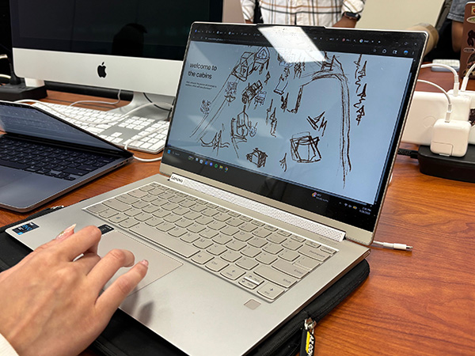
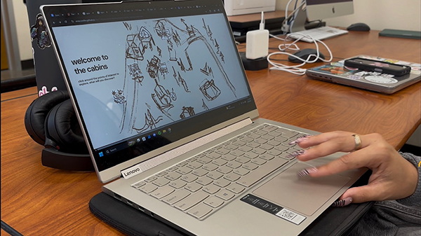
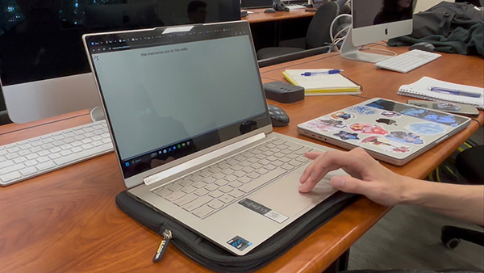

During the usability testing I observed that it was fairly easy for everyone to navigate around the map and they had found the clickable icons pretty easily. Shortly before this I had added a white background to each of the icons which I think definitely made each of them easier to see. They each would take some time looking over the entire image but all clicked through each of the seven icons in the end.

I did notice that a lot of the testers would click on some of the icons multiple times. One even said that they often could not remember which ones they had already selected. They went on to suggest making a way to tell which ones had been clicked on already. I had also observed another user often missing the back arrow on each of the overlays. They would go too far to the left and attempt to click the area at the very edge of the page. I just found this very interesting.

One thing that I definitely plan to improve was including better feedback when each of the icons are hover or clicked. I want there to be some movement and it will help them stand out even more. Plus all my testers had identified that this was something that would need improvement.

Interestingly, one tester said that the direction of the back arrow facing to the left and the movement of the overlay going to the right was confusing when closing it. I had not even realized that was confusing and am currently considering changing the icon or moving it to the other side of the page for better clarity.
Additionally I am working on cleaning up the art for the icons and the background. What I have currently were more sketches and I was leaning into going for more of a sketchy style. But I found that I was losing clarity and have opted to create some vector sketches with Adobe Fresco. That way the icons will have better clarity and I can include a cleaner background on them for visibility.